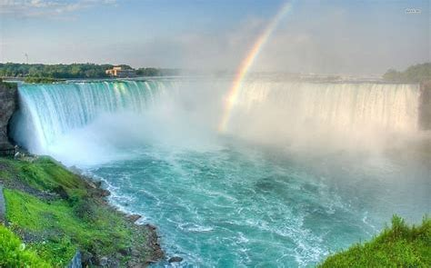
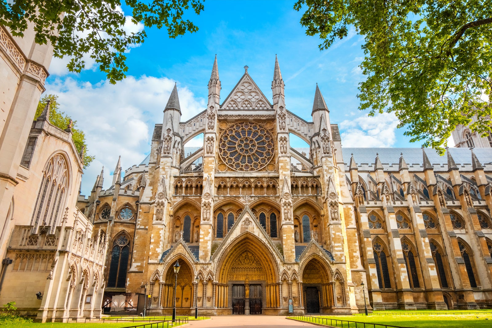

List of Travel sites
Niagara Falls


Geographical Location: North America
Niagara Falls is located on the border between Canada and the United States. Connecting Lake Erie and Lake Ontario, Niagara Falls has the highest flow rate of any waterfall in North America.
Niagara Falls draws in thousands of visitors every year, and for good reason. As such, there are numerous things that you can see while you visit the falls, and it is very easy to make a full trip out of seeing this wonderful sight.
Photo Gallery

The ‘Horseshoe’
A rainbow touching down in the falls

A sunset overlooking the falls

A colorful view of Niagara Falls

A distant look at Niagara Falls
Steven Jacovitch
Chiangmai, Thailand


Geographical Location: Asia
Chiang Mai, nestled in the lush hills of northern Thailand, is a city that captivates with its unique blend of cultural richness and natural beauty. Situated approximately 700 kilometers north of Bangkok, Chiang Mai is the largest city in the region and serves as the capital of the province of the same name. Its geographical location is nothing short of enchanting, surrounded by forested mountains and picturesque landscapes. This charming city, often referred to as the "Rose of the North," offers visitors a delightful escape from the bustling urban life, inviting them to explore a realm where tradition meets modernity amidst a backdrop of stunning scenery.
The heart of Chiang Mai beats with a rich history that dates back over 700 years. Founded in 1296, the city was originally the capital of the ancient Lanna Kingdom. Today, remnants of its storied past are scattered throughout the city, from the ancient temples that dot the landscape to the preserved city walls and moats that harken back to a bygone era. Among the city's treasures is the revered Wat Phra Singh, a 14th-century temple known for its intricate architecture and revered Buddha image. Chiang Mai's historical sites provide a captivating glimpse into its heritage, making it a destination that seamlessly weaves together the past and present for visitors to explore and appreciate.
Photo Gallery

You can see hot balloons in Chiang Mai as well.

You can see cute elephants in Chiang Mai! Isn’t that fun?!

There are so many beautiful temples in Chiang Mai.

Be respectful to the monks.

And don’t forget to treat yourself with delicious Thai food!
Cindy Ye
London, United Kingdom


Geographical Location: London, United Kingdom
As one of the most iconic cities in the world, London carries a rich history that is matched by its continuous growth and evolution. A powerhouse of culture, politics, and finance, it stands as a city where the past and present exist harmoniously side by side. From the ancient towers that narrate tales of a regal past to modern architectural marvels that reach for the skies, London offers an unrivaled blend of history and modernity.
As one of the most iconic cities in the world, London carries a rich history that is matched by its continuous growth and evolution. A powerhouse of culture, politics, and finance, it stands as a city where the past and present exist harmoniously side by side. From the ancient towers that narrate tales of a regal past to modern architectural marvels that reach for the skies, London offers an unrivaled blend of history and modernity.
Photo Gallery

Big Ben stands tall as a testament to London's historical grandeur, its chimes echoing tales of times gone by.

The Tower Bridge, a symbol of engineering marvel and historical significance, stretches across the River Thames with its iconic twin towers.
Westminster Abbey, an architectural masterpiece, has been the setting for countless royal ceremonies, weaving itself seamlessly into the fabric of British history.
King's Cross Station, more than just a transport hub, is a symbol of London's continuous evolution, and the magical lore associated with it beckons to fans of literature and adventure alike.
The expansive London skyline, a blend of the old and new, offers a panoramic view that captures the city's essence, where history meets modernity.
Kai